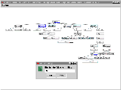
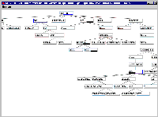

{kind=link}

MFTV was built to visualize and inspect some dense linguistic tree data that encode ambiguities as alternative branches. We call this type of tree data Multi-faceted Trees. Each ambiguous alternative branch is called a face. For one node, only one "face" is shown at a time. Other "faces" are represented as choice buttons. This tool is already in use at Maryland's Computational Linguistic and Information Processing (CLIP) Lab. Previously, they were using lisp print outs to inspect these data structures (usually, more than 20 pages of print out for one tree).
Since multi-faceted tree is a generalization of tree data, MFTV can be used for any type of dense tree data structures. MFTV was developed by Nizar Habash and Jin Tong, graduate students in the Computer Science department at the University of Maryland.
A sample tree is loaded, and a search on primitive "GO" is
performed. Blue-highlighted nodes contain the primitive "GO". Dark
buttons represent an alternative subtrees at that node and they can be
swapped in by clicking on them. Blue buttons are those alternative
subtrees that contain primitive "GO". This tree is from a
machine-translation project data set.

Same tree as the above. One alternative branch (face) is swapped
in. Node "ACT" was replaced by "GO".
"Semantic Zooming" is used. More detailed content will be shown when zoomed in.
Before zooming in:

{kind=link}